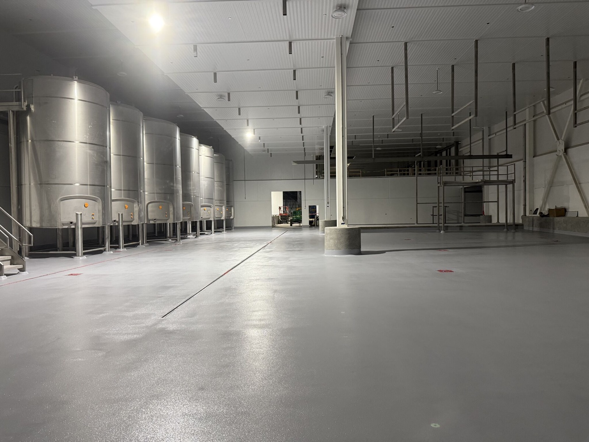
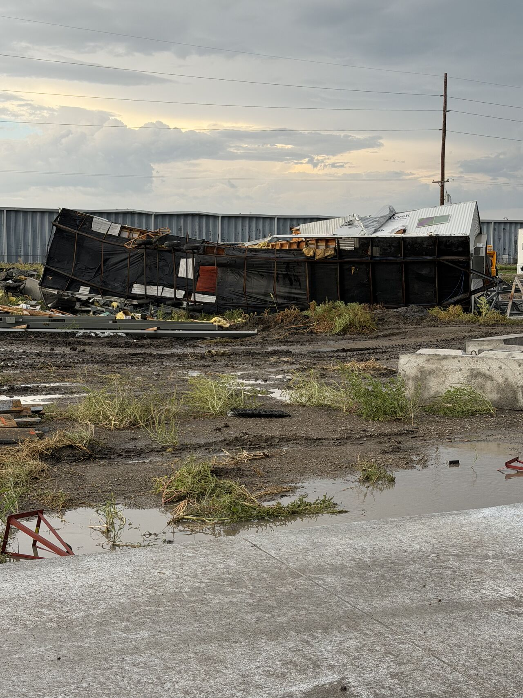
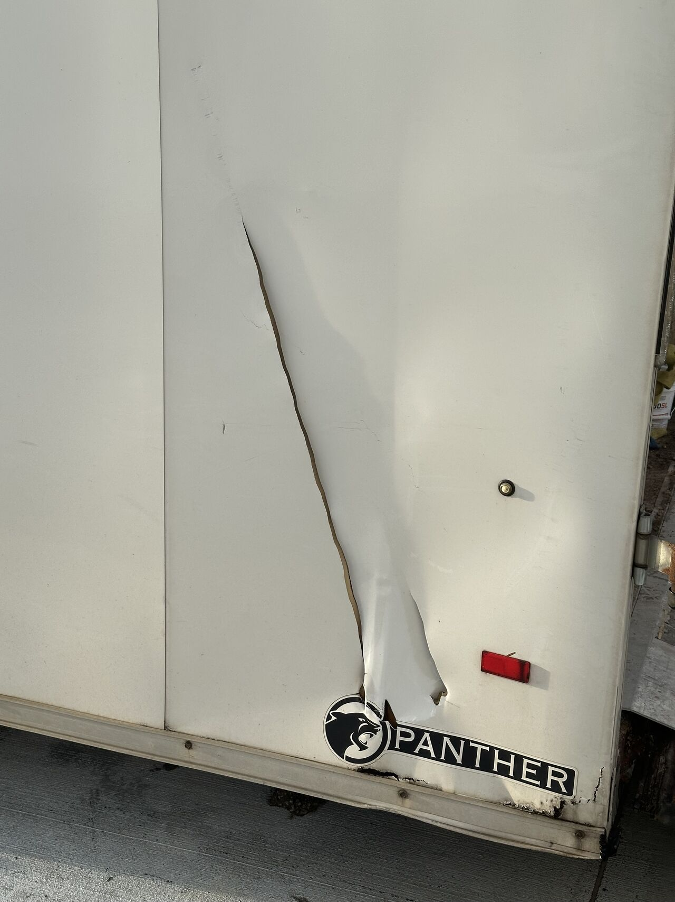
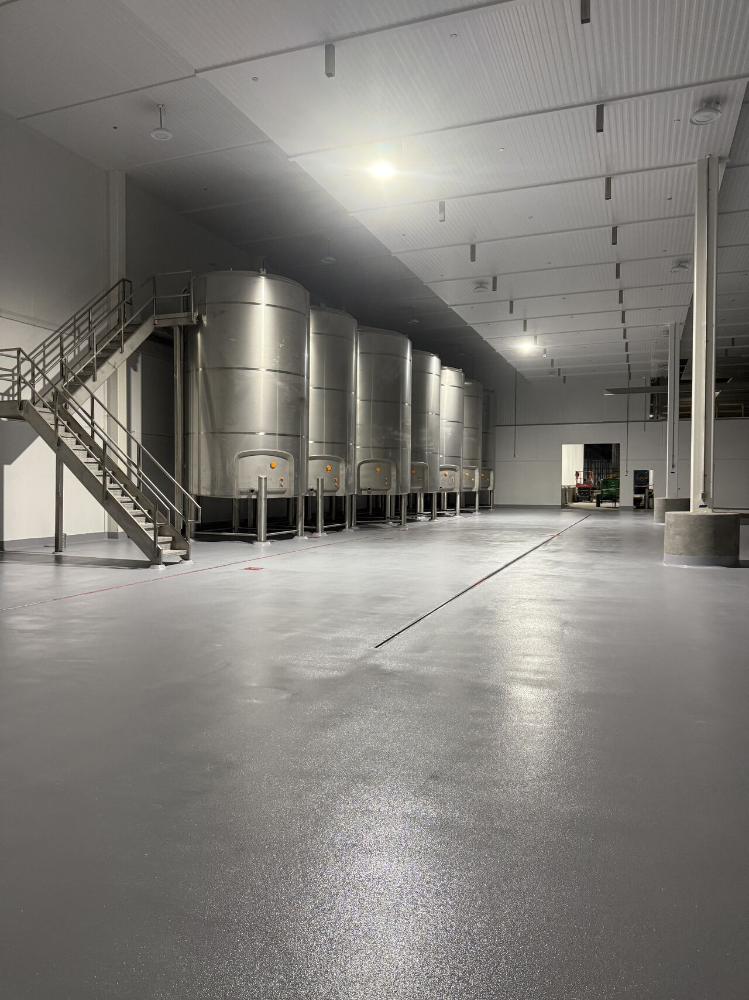

Our crew was putting the finishing touches on a floor at a new dairy build when a tornado moved through the jobsite. The line about dedication writes itself, but the real story is simpler: everyone was inside when the storm came through, and everyone walked away safely.

The photos tell both sides of the day. Outside, trailers and temporary jobsite structures took the hit. Inside, the finished area shows the reason the crew was there in the first place. Once the weather cleared and the site was safe, they got back to work.
Everyone Was Inside
No floor, schedule, or finishing detail is more important than getting people out of harm's way. This storm left obvious damage around the site. It also left us with the only result that mattered in that moment: the crew was safe.


The exterior photos are not flooring photos, and that is the point. One shows a collapsed structure, scattered material, muddy ground, and standing water. The next shows a long tear through the side of a trailer. Those images explain why work stopped and why the first update from the site was about the people, not the schedule.
Work resumed after the storm had passed. That does not make the damage outside any smaller. It puts the finished area inside in the right context. Construction schedules matter, but they come after the people doing the work.
Back to the Dairy Floor
The completed area is a large, open dairy space with stainless steel tanks, stairs, equipment supports, and a continuous gray floor running around them. The project was still moving, and the LinkedIn update made clear that there was plenty more work ahead.

The two finished-floor photos show how much of the room was already taking shape. Stainless tanks line one side. Columns, stairs, equipment bases, and long open runs divide the space. The gray floor carries through all of it. These are the kinds of wide views that make the finished work easier to understand than a close crop ever could.
This update was not a product specification. It did not name the flooring system, the square footage, or the exact installation details, so we will not fill in the blanks. What it did show was a finished area at a new dairy build and a crew that returned to the job after a serious weather event.
There will be more to show as the build progresses. For this day, a safe crew and a finished section were enough.